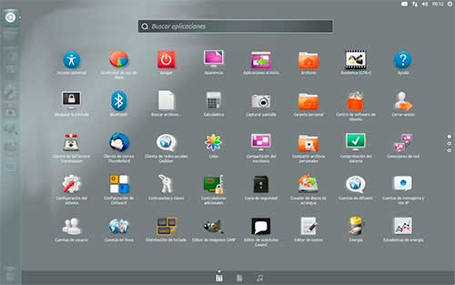

Simplificando el dash de Unity
Esta es una maqueta que tenía guardada hace varios meses, la hice pensando en una interacción mas simple para el dash de Unity, y ahora le tomo más el sentido.

Hace unos días decidí proponerla en la lista de correo de Unity Design y además como idea en Brainstorm. Espero que por lo menos sirva como idea para otros diseños para simplificar la interacción del dash y la experiencia en general. Veamos los cambios que propuse.
La maqueta muestra un enfoque en buscar y rápida interacción para localizar aplicaciones. Sin elementos que distraigan.
Cambios
- Los círculos a la derecha indican el lugar de la página de aplicaciones en que te encuentras, un método de scroll de páginas como Android o iOS, pero con scroll hacia abajo.
- Las 3 filas que se usan para expandir y contraer elementos fueron eliminadas. La razón es debido a que 'Usadas recientemente' no tiene un mejor uso que el lanzador izquierdo, donde el usuario puede poner sus aplicaciones con más uso. ¿Por qué 'Instaladas' está contraída? sería más coherente que todos esos iconos de aplicaciones instaladas estén expandidos para obtener una mejor vista de lo que está en el sistema. 'Aplicaciones disponibles para descargar' es redundante con la misma característica que utiliza el Centro de software, el cual también ejerce la función de recomendar software.
- El lens de aplicaciones reemplaza al inicio o home. La razón es debido a que el inicio está dividido en 3 filas con elementos recientes que se pueden encontrar en el lanzador izquierdo o en los mismos lens de abajo. Entrega información redundante el inicio, por eso lo eliminé.
- Los botones de control de ventana eliminados. La razón es debido a que el botón de Ubuntu abre y cierra el dash, y el dash a pantalla completa siempre mantiene tu atención en toda la pantalla.
- Los filtros de categorías removidos. La razón es debido a que al agregar más opciones de subdivisión solo atrae más complejidad, para esto es la búsqueda y el rápido scroll de páginas de aplicaciones.